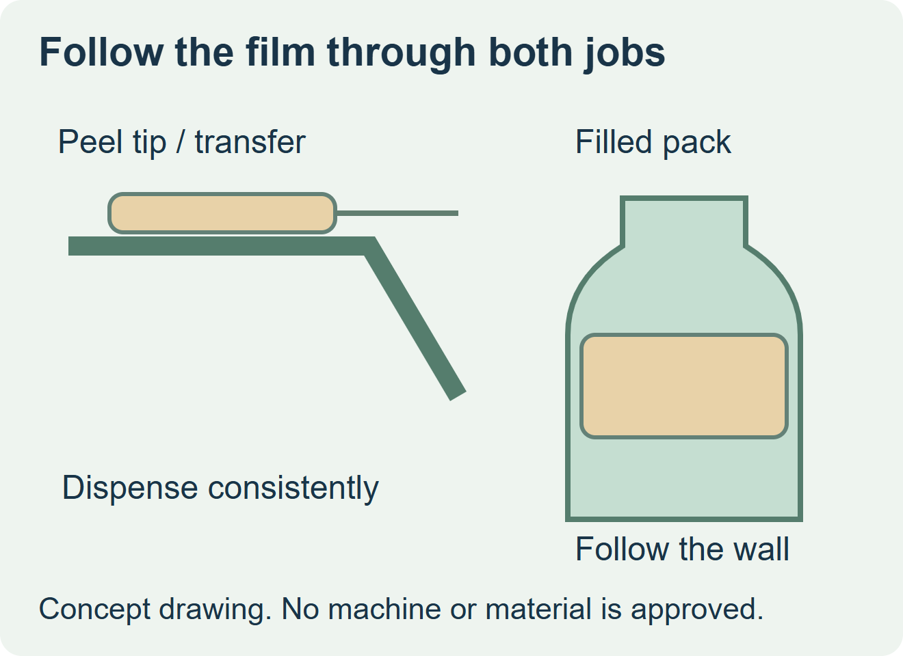
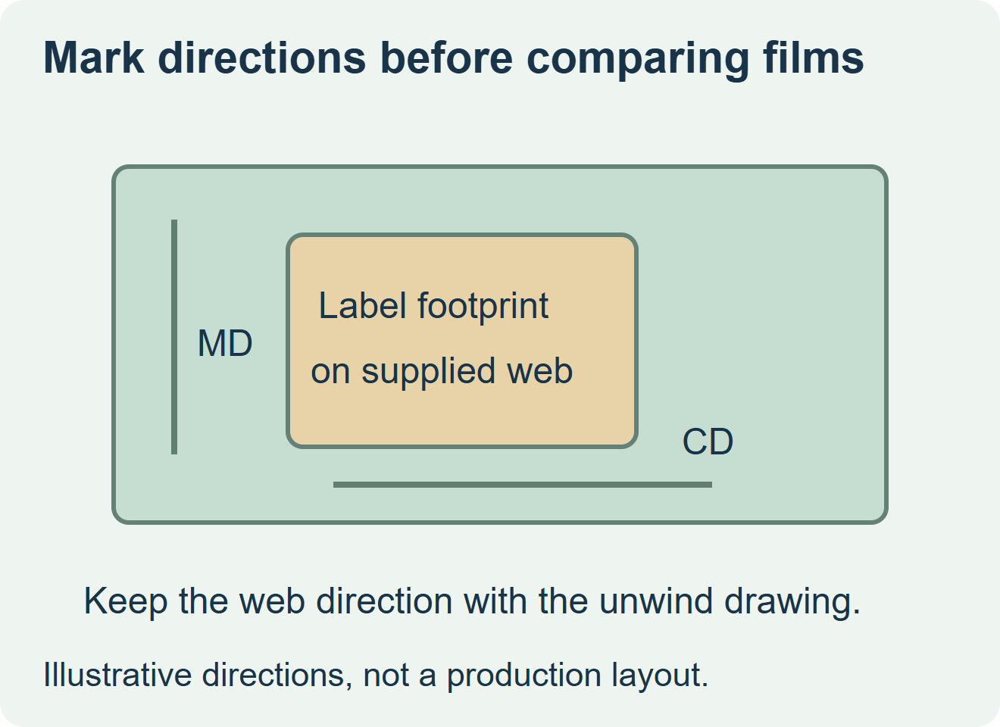

Choose a film construction that can leave the backing consistently on the intended applicator and follow the actual bottle after placement. If a softer candidate looks better by hand but does not transfer reliably, keep the purchase provisional. Compare a supported construction or application proposal rather than increasing adhesive strength on instinct.


The film has two jobs before the bottle reaches the shelf
At the peel tip, the label must separate and present itself for application. On the bottle, it must follow the required surface and movement without unacceptable edges, wrinkles or print damage. Those requirements can pull the material choice in different directions. Matching the face thickness alone does not settle the balance.
Avery Dennison’s Global MDO Next Generation technical guide describes a product-specific combination of machine-direction stiffness and liner release for dispensing, with cross-direction softness for conforming to the container. This supports asking about directional properties. It does not establish that every oriented film behaves the same way, or that ZFU supplies that named construction.
| Observe the proposed converted sample | If the result is unresolved | Next purchasing question |
|---|---|---|
| Label follows the liner or does not present consistently | Keep the dispensing stage open | Which supported face/liner/release combination represents this machine? |
| Label releases, then folds or lands inconsistently | Separate transfer from release | Does the proposed roll and application method provide controlled placement? |
| Label transfers but buckles on the filled bottle | Keep the pack-fit stage open | Can the supplier propose a suitable directional film, footprint or supported alternative? |
| Both stages meet the agreed observations | Retain the represented scope | Which bottle states, speeds and handling conditions were actually included? |


Put the direction on the same drawing as the label
Ask the converter to mark machine direction and cross direction relative to the supplied web and label artwork. The bottle’s vertical direction is not automatically the film’s machine direction. Keep that drawing with the unwind specification, footprint and full face/adhesive/liner/finish identity. Do not rotate the production layout merely because the artwork still reads correctly on screen.
For a hypothetical sauce bottle, a hand-applied softer film follows the side panel well. The buyer should still request a representative roll. Compare its release and transfer on the actual station, then inspect filled bottles through normal gripping and handling. If several construction features change, record them; a better result does not isolate a single cause.
Compare the finished label, then quote the accepted route
Print, varnish or lamination belongs in the sample when it forms part of the order. Blank face stock can help an early material discussion while leaving the finished construction unresolved. Ask the relevant suppliers which observations the sample supports and which remain open. Equipment work and trial conditions belong to the authorized line owner.
Retain a converted strip and applied bottles with the drawing and observations. Price the same accepted decorated-pack requirement, including the confirmed roll, setup and sample work. A lower face thickness or a more flexible material description is not a demonstrated saving. If no candidate meets both jobs, request another supported proposal before ordering the larger quantity.
Discuss the unresolved label requirement
Send bottle samples and fill/application state, label footprint, proposed construction, web-direction drawing, station, observed failure point and quantities. Review food label options and prepare a label specification inquiry. The contact page opens an email draft and lists email or WhatsApp for attachments. Supply, proof options, testing, pricing and timing require project confirmation.